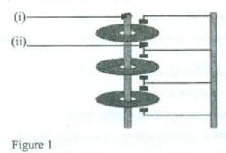

OPERATING SYSTEMS
Exam Code: 2920/105
Duration: 3 hours
Period: November 2016
(a) Explain the term system call as applied in operating systems. A system call is a request made by a user-level process to the operating system kernel to perform a privileged operation. It acts as the interface between user space and kernel space, allowing user programs to request services from the OS, such as I/O operations, process creation, and memory allocation. (b) Outline four benefits of virtual memory in computers. Running Larger Programs: Virtual memory allows users to run programs larger than the physical RAM available. It achieves this by using disk space as an extension of RAM, swapping portions of programs (pages) between disk and memory as needed. Increased Multiprogramming: By enabling programs larger than physical memory to run, virtual memory increases the degree of multiprogramming. More processes can reside in memory (partially), improving CPU utilization and system throughput. Efficient Memory Utilization: Virtual memory leads to more efficient utilization of physical RAM. Only the necessary parts of a program are loaded into memory, freeing up space for other processes or data. Memory Protection: Virtual memory enhances memory protection. Each process operates in its own virtual address space, isolated from other processes, preventing unauthorized access and interference. (c) Describe three strategies that could be used to mitigate deadlocks in operating systems. Deadlock Prevention: Deadlock prevention aims to prevent deadlocks by ensuring that at least one of the necessary conditions for deadlock cannot hold. These conditions are mutual exclusion, hold and wait, no preemption, and circular wait. Prevention techniques might include: * Mutual Exclusion: Not easily preventable, as some resources are inherently non-sharable. * Hold and Wait: Processes must request all required resources before execution or release all held resources before requesting new ones. * No Preemption: If a process holding certain resources requests another resource that cannot be immediately allocated, the held resources are preempted (temporarily taken away). * Circular Wait: Impose a linear ordering of resource types and require that each process requests resources in an increasing order of enumeration. Deadlock Avoidance: Deadlock avoidance allows all four deadlock conditions to be possible but makes dynamic decisions about resource allocation to ensure that the system never enters a deadlock state. This often involves using algorithms like the Banker's Algorithm. Avoidance requires the system to have prior information about the maximum resource needs of each process. The system then analyzes each resource request to ensure that granting it will keep the system in a 'safe state' (a state from which all processes can complete without deadlock). Deadlock Detection and Recovery: Deadlock detection and recovery allow deadlocks to occur, then detect and resolve them. Detection involves periodically checking the system state to see if a deadlock has occurred, typically by building and searching a resource allocation graph for cycles. Once a deadlock is detected, recovery strategies may include: * Process Termination: Aborting one or more processes involved in the deadlock. This can be drastic, potentially losing progress. Selection of processes to abort can be based on priority, progress made, or resources held. * Resource Preemption: Forcibly taking resources away from one or more deadlocked processes. This is only feasible if the resource state can be easily saved and restored. The preempted process may need to be rolled back to a safe state and restarted. (d) (i) Several resources are prerequisite for a successful process execution by the CPU. Outline four examples of these resources that should be availed to the CPU. CPU Time: CPU time is the fundamental resource required for process execution. The CPU needs to allocate processing cycles to the process so it can execute its instructions. Scheduling algorithms determine how CPU time is distributed among competing processes. Memory: Memory (RAM) is essential for storing the process's code, data, and stack. The CPU fetches instructions and data from memory to execute the process. Sufficient memory must be allocated to the process for it to run effectively. Input/Output (I/O) Devices: Processes often require access to I/O devices such as disks, network interfaces, keyboards, and displays. Access to these devices allows processes to interact with the external environment, read input, and produce output. Files: Processes frequently need to access files for reading data or storing results. File system resources, including file handles, disk space, and file metadata, are necessary for file operations. (ii) Sifa was required to identify advantages of the pre-emptive job scheduling techniques. Explain two advantages that she could have identified. Improved Responsiveness: Pre-emptive scheduling significantly improves system responsiveness, especially for interactive and time-sensitive applications. By allowing the operating system to interrupt (preempt) a running process and switch to another ready process, pre-emptive scheduling ensures that high-priority or interactive tasks can get quick CPU access. This reduces latency and provides a more interactive user experience, as the system remains responsive even under heavy load. Fairer Allocation of CPU Time: Pre-emptive scheduling promotes a fairer allocation of CPU time among processes. It prevents a single process from monopolizing the CPU for extended periods, which can happen in non-preemptive systems where a long-running process can block shorter or higher-priority processes. Techniques like time-slicing in Round Robin scheduling, a pre-emptive algorithm, ensure that each process gets a fair share of CPU time over time, improving overall system fairness and preventing starvation of processes. (a) Outline three file operations that could be applied to a file. Create: The create operation is used to establish a new file in the file system. It involves allocating storage space for the file and creating a directory entry with the file's name and attributes. Creating a file makes it ready for data to be written into it. Read: The read operation allows for retrieving data from an existing file. It involves accessing the file's contents from the storage medium and transferring the data to memory for processing or display. Reading a file is a fundamental operation for accessing and using stored information. Write: The write operation is used to store data into a file. It involves transferring data from memory to the file on the storage medium, updating the file's contents. Writing to a file is essential for saving new information or modifying existing file data. (b) (1) Define the term sector as applied in computer storage. A sector in computer storage, particularly in hard disk drives and floppy disks, is the smallest physical storage unit on a disk. It is a fixed-size block of data, traditionally 512 bytes or 4KB, that can be read or written in a single operation. Sectors are arranged in tracks and are the fundamental unit of data organization and access on disk media. (ii) With the aid of a diagram, describe file allocation table as used in operating systems. (ii) File Allocation Table (FAT): A File Allocation Table (FAT) is a data structure used by some operating systems to manage file storage on disk, particularly in older systems like DOS and early Windows versions. It acts as an index that maps files to the clusters (groups of sectors) they occupy on the disk. The FAT is essentially a table that resides at the beginning of a disk partition, containing entries for each cluster on the disk. Each entry indicates whether a cluster is free, allocated to a file, or marked as bad. For allocated clusters, it points to the next cluster in the file, forming a chain of clusters for each file. Diagram of FAT Structure: Description: FAT Location: The FAT is typically located at the beginning of a disk partition, often with a backup copy (FAT2) for redundancy. Cluster Mapping: The FAT is an array where each entry corresponds to a cluster on the disk. The entry for each cluster indicates its status (free, allocated, bad) or, if allocated, the number of the next cluster in the file's chain. File Allocation: When a file is created or expanded, the operating system searches the FAT for free clusters, allocates them to the file, and updates the FAT entries to link these clusters together in a chain. The directory entry for a file stores the starting cluster number of the file. File Access: To access a file, the OS reads the starting cluster number from the directory entry and then traverses the chain of clusters by following the pointers in the FAT entries until it reaches the end-of-file marker. This linked list structure allows for non-contiguous file allocation. (c) (i) Outline two limitations of fixed memory partitioning. Internal Fragmentation: Internal fragmentation occurs when a process is allocated a partition larger than its actual memory requirement. The unused space within the partition is wasted and cannot be used by other processes. Since partitions are fixed in size, there is often a mismatch between process size and partition size, leading to inefficient memory utilization. Limited Multiprogramming Degree: Fixed partitioning limits the degree of multiprogramming. The number of partitions is fixed at system startup, restricting the number of processes that can reside in memory simultaneously. If all partitions are occupied, new processes must wait even if there is enough total free memory, just not in appropriately sized partitions. This can reduce overall system throughput and responsiveness. (ii) Differentiate between single and double buffering as used in I/O ports registers. Single Buffering: In single buffering, a single buffer is used in memory for data transfer between an I/O device and the processor via I/O port registers. Data is transferred in chunks, and the processor must wait for each chunk transfer to complete before initiating the next operation. This leads to alternating periods of data transfer and processing, with the processor often idle during data transfer. Single buffering is simple but can be inefficient due to the wait times. Double Buffering: In double buffering, two buffers are used. While one buffer is being filled or emptied by the I/O device (via I/O port registers), the processor can simultaneously process data in the other buffer. This allows for overlapping of I/O operations with processing. The processor does not have to wait for each I/O operation to complete before starting processing, reducing idle time and improving throughput. Double buffering enhances efficiency by enabling concurrency between data transfer and processing. Key Difference: Single buffering uses one buffer and involves sequential I/O and processing, leading to processor idle time. Double buffering uses two buffers to overlap I/O and processing, reducing idle time and improving efficiency. (d) Tom would like to design a memory system that uses best-fit placement algorithm. Explain two limitations of this algorithm that would affect the performance of the memory. Increased Search Time for Allocation: The best-fit algorithm requires searching the entire list of free memory partitions to find the smallest partition that is large enough to satisfy the memory request. This exhaustive search can be time-consuming, especially when there are many free partitions. The overhead of searching for the best fit can increase memory allocation time, impacting system performance, particularly for frequent memory allocation requests. External Fragmentation: While best-fit aims to minimize wasted space, it can still lead to external fragmentation. By allocating memory from the smallest suitable partition, it tends to leave behind many small, unusable fragments of free memory between allocated blocks. Over time, this can result in a situation where there is sufficient total free memory, but it is scattered in small chunks, making it difficult to allocate memory for larger processes that require contiguous blocks. This fragmentation reduces the usability of total memory and can degrade performance. 3. (e) Explain each of the following terms as used in operating systems: (1) kernel; (i) Kernel: The kernel is the core of an operating system. It is the lowest-level software that has direct control over the system hardware. The kernel provides essential services such as process management, memory management, file system management, device control, and system calls. It acts as a bridge between hardware and user-level applications and is responsible for managing system resources. (!!) monitor. (ii) Monitor: In operating systems, a monitor is a synchronization construct used for controlling access to shared resources in concurrent programming. A monitor encapsulates shared data and a set of procedures (methods) that operate on that data. Monitors ensure mutual exclusion (only one process can be active inside the monitor at any time) and provide condition variables for processes to wait and signal each other within the monitor. (b) Elsie was required to select an operating system that would be used on a server computer to provide a wide range of services to other desktop computers. (i) Identify the most appropriate type of operating system that she could select justifying your answer. (i) Network Operating System (NOS): The most appropriate type of operating system Elsie could select is a Network Operating System (NOS). A NOS is specifically designed to manage server operations and provide network services to client computers. It is optimized for resource sharing, network management, security, and handling multiple client requests efficiently, making it ideal for server environments providing services to desktop computers. (ii) Explain two benefits that her company could realize when using the operating system identified in (i). Centralized Resource Management and Sharing: Using a NOS on a server enables centralized management and sharing of resources. The server can host and manage resources like files, printers, applications, databases, and internet access, making them available to multiple desktop computers (clients) across the network. This centralized approach simplifies administration, reduces redundancy, and improves resource utilization. It allows for efficient sharing of expensive resources and easier control over access and usage. Enhanced Security and Control: A NOS provides enhanced security and control over network resources and data. Security features like user authentication, access control lists, firewalls, and encryption can be centrally implemented and managed on the server. This central security administration simplifies the enforcement of security policies, protects sensitive data, and reduces vulnerabilities across the network. A NOS allows for better control over user access, data integrity, and network traffic, improving overall system security posture. (c) (i) Explain the term Remote Procedure Call (RPC) as used in operating systems. (i) Remote Procedure Call (RPC): Remote Procedure Call (RPC) is a protocol that allows a program on one computer to execute a procedure or function on another computer over a network as if it were a local procedure call. RPC abstracts the complexities of network communication, making distributed computing easier. It enables client-server interactions where a client can request services from a server by invoking procedures remotely, simplifying distributed application development. (ii) Differentiate between communication and storage I/O devices. Communication I/O Devices: Communication I/O devices are used for data transfer between computer systems or networks. They facilitate data exchange over communication channels. Examples include network interface cards (NICs), modems, and serial ports. The primary function of communication I/O devices is to enable networking and data transmission between computers, allowing for distributed processing, network access, and remote communication. Storage I/O Devices: Storage I/O devices are used for persistent data storage and retrieval within a computer system. They provide non-volatile storage for data that needs to be retained even when the system is powered off. Examples include hard disk drives (HDDs), solid-state drives (SSDs), and USB drives. The main purpose of storage I/O devices is to store files, applications, and operating system data, enabling long-term data retention and access. Key Difference: Communication I/O devices are for inter-system data exchange over networks, while storage I/O devices are for persistent data storage within a single computer system. (d) A computer is made up of different types of internal buses to facilitate communication. Explain two types of such buses found in a computer system. Data Bus: The data bus is a set of parallel wires (lines) used to transfer actual data between components of a computer system. It carries the binary data being processed or stored. The width of the data bus (number of lines) determines the amount of data that can be transferred simultaneously in one clock cycle. Common data bus widths are 32-bit, 64-bit, or wider. A wider data bus allows for faster data transfer rates, improving system performance. Address Bus: The address bus is another set of parallel wires used to specify the memory location or I/O port address that the CPU wants to access. The CPU places an address on the address bus to select a specific memory location or I/O device for read or write operations. The width of the address bus determines the total amount of memory that the CPU can address. For example, a 32-bit address bus can address 2^32 bytes (4GB) of memory. 4. (a) (1) Outline three examples of roles that could be provided by a parent processor. Process Creation: A parent processor (or process) is responsible for creating child processes. It initiates the execution of new processes, allocating necessary resources and setting up the execution environment for the child processes. Process creation is a fundamental role in process management, allowing for multitasking and parallel processing. Resource Allocation: Parent processors can allocate resources to their child processes. This includes memory allocation, file access permissions, and access to I/O devices. Resource allocation ensures that child processes have the necessary resources to execute effectively and prevents resource conflicts between processes. Process Control and Monitoring: Parent processors play a role in controlling and monitoring their child processes. They can manage the execution of child processes, including starting, suspending, resuming, and terminating them. Parent processes can also monitor the status and resource usage of their children, enabling process management and system monitoring functionalities. (ii) With the aid of a diagram, describe the burst DMA mode of operations. (ii) Burst DMA Mode of Operation: In Burst DMA (Direct Memory Access) mode, the DMA controller transfers a continuous block of data in a single burst. Once the DMA controller gains control of the system bus, it transfers multiple data words or bytes in rapid succession without releasing the bus between each transfer. This mode is highly efficient for large data transfers as it minimizes the overhead of bus arbitration for each data unit. The CPU is suspended from bus access during the entire burst transfer. Diagram of Burst DMA Mode: Description: DMA Request and Bus Grant: The I/O device requests a DMA transfer. The DMA controller requests control of the system bus from the CPU. Once the CPU grants the bus, the DMA controller gains exclusive control for a burst transfer. Burst Data Transfer: The DMA controller transfers a block of data (burst) continuously between the I/O device and memory without releasing the bus after each data unit. It performs multiple read or write operations in quick succession, using the granted bus access efficiently. CPU Suspension: During the burst transfer, the CPU is suspended from accessing the system bus. It has to wait until the DMA controller completes the entire burst transfer and releases the bus. This is known as cycle stealing, although in burst mode, it's a block of cycles. Transfer Completion and Bus Release: After the burst transfer is complete (specified number of bytes transferred), the DMA controller releases control of the system bus, and the CPU can resume its bus operations. The DMA controller then notifies the CPU of transfer completion via an interrupt. Advantage: Burst DMA mode is very efficient for high-speed data transfers because it reduces bus arbitration overhead, leading to higher throughput compared to single-transfer DMA modes. (b) With the aid of a diagram, describe a hierarchical file system. Hierarchical File System (Tree-Structured Directory): A hierarchical file system, also known as a tree-structured directory, is a file organization system that uses a directory hierarchy to organize files and directories. It is structured like an inverted tree, with a single root directory at the top, and directories and files branching out from it. This structure allows users to organize files into logical groups and sub-groups, making file management more organized and scalable. Diagram of Hierarchical File System: Description: Root Directory: At the top of the hierarchy is the root directory, denoted as '/' in Unix-like systems or drive letter (e.g., 'C:\') in Windows. It is the starting point of the entire file system. Directories (Folders): Directories, also known as folders, are containers that can hold files and other directories (subdirectories). They are used to organize files into logical groupings. Directories create levels in the hierarchy. Files: Files are the actual data containers, stored within directories. Each file has a name and resides in a specific directory. Files are the leaf nodes in the tree structure. Pathnames: Files and directories are accessed using pathnames, which specify the sequence of directories to traverse from the root to reach the target file or directory. Pathnames can be absolute (starting from the root) or relative (starting from the current working directory). Navigation: Users can navigate through the directory hierarchy to access files and directories. Operations like creating, deleting, moving, and renaming files and directories are performed within this hierarchical structure. Advantages: Hierarchical file systems provide better organization, scalability, and manageability compared to flat file systems. They allow users to structure their data logically, avoid naming conflicts, and efficiently manage large numbers of files. (c) Mark proposed a file encryption technique for his company's file system. Explain two techniques that he could have proposed. Symmetric Encryption: Mark could propose using symmetric encryption techniques. In symmetric encryption, the same key is used for both encryption and decryption. Techniques like AES (Advanced Encryption Standard), DES (Data Encryption Standard), or Triple DES could be employed. When a file is encrypted, it is transformed into an unreadable format using the symmetric key. To decrypt the file and access the original data, the same key must be used. Symmetric encryption is generally faster and more efficient for encrypting large files, making it suitable for file system encryption. Key management and secure key distribution are crucial considerations with symmetric encryption. Asymmetric Encryption (Public-Key Encryption): Mark could also consider asymmetric encryption, also known as public-key encryption. Asymmetric encryption uses key pairs: a public key for encryption and a private key for decryption. Techniques like RSA (Rivest-Shamir-Adleman) or ECC (Elliptic Curve Cryptography) could be used. Files can be encrypted using the public key, and only the corresponding private key can decrypt them. Asymmetric encryption provides more secure key management as the private key does not need to be shared. It can be used for encrypting files or for secure key exchange to then use symmetric encryption for bulk data encryption. Asymmetric encryption is generally slower than symmetric encryption and is often used in combination with symmetric methods. (d) Deadlocks are inevitable in operating systems. Explain two conditions that should hold to trigger this anomaly. Mutual Exclusion: Mutual exclusion is a condition where at least one resource must be held in a non-sharable mode. This means that only one process at a time can use the resource. If another process requests that resource, it must wait until the resource is released. If mutual exclusion does not hold for all resources, deadlocks cannot occur, as processes could share resources freely. Hold and Wait: The hold and wait condition occurs when a process is holding at least one resource and is waiting to acquire additional resources that are currently being held by other processes. For a deadlock to occur, processes must hold resources while simultaneously requesting new ones. If processes were required to request all needed resources at the start and not hold resources while waiting for others, deadlocks could be prevented. 5. (a) (i) Name two ways of creating processes during execution by operating system. Forking (System Call): The fork system call is a common method for process creation. When a process calls fork, the operating system creates a duplicate of the calling process. The new process, called the child process, is nearly identical to the parent process, inheriting its code, data, and resources, but with a new process ID (PID). Exec (System Call): The exec system call is used to replace the current process's memory space with a new program. Typically used after a fork, exec loads and runs a new executable file in the child process's context. This allows a process to initiate and run a completely different program than itself. (ii) Outline four advantages of peer-to-peer file sharing. Decentralization: Peer-to-peer (P2P) file sharing is decentralized, meaning there is no central server or authority controlling the file sharing process. This decentralization makes the network more robust and resistant to single points of failure. If one peer goes offline, the network can continue to function as long as other peers are available. Scalability: P2P networks are inherently scalable. As the number of users (peers) increases, the network's capacity and bandwidth also increase because each new peer contributes resources (bandwidth, storage) to the network. This scalability makes P2P suitable for large user bases and heavy file sharing loads. Cost-Effective: P2P file sharing can be cost-effective compared to centralized systems. There is no need for expensive central servers and infrastructure. Resources are distributed among peers, reducing infrastructure costs and reliance on central providers. Increased Availability and Redundancy: Files shared on P2P networks are often distributed across multiple peers. This redundancy enhances file availability. If one peer hosting a file goes offline, other peers may still have copies of the file, ensuring that the file remains accessible to the network. This improves data resilience and availability. (b) Differentiate between seek time and rotational delay as used in disk management. Seek Time: Seek time is the time it takes for the disk arm and read/write head to move to the correct track (cylinder) on the disk surface where the desired data is located. Seek time is a major component of disk access time and is influenced by the distance the head needs to travel across the disk. Shorter seek times result in faster data access. Disk scheduling algorithms aim to minimize average seek time by optimizing the order in which disk requests are serviced. Rotational Delay (Latency): Rotational delay, also known as rotational latency, is the time it takes for the desired sector of the disk to rotate under the read/write head once the head is positioned over the correct track. After the seek operation positions the head over the correct track, rotational delay is the time for the disk to spin until the beginning of the requested sector reaches the head. Rotational delay is dependent on the disk's rotation speed (RPM). Higher RPM disks have lower rotational latency. Key Difference: Seek time is the time for head movement across tracks, while rotational delay is the time for disk rotation to position the sector under the head after the head is on the correct track. Both contribute to total disk access time. (c) Identify the type of memory used in each case: (i) temporarily store results of processing by CPU; (i) Registers (ii) retains stored information event after computer restarts; (ii) Secondary Storage (e.g., Hard Disk Drive, SSD) (iii) portion of hard disk that is logically addressed as a main memory; (iii) Virtual Memory (Swap Space/Page File) (iv) bridges the speed gap between the processor and RAM; (iv) Cache Memory (d) Sam was required to enumerate objectives of inter process communication in operating systems during a regional symposium for programmer's. Explain three objectives that he could have outlined. Data Sharing: One primary objective of inter-process communication (IPC) is to enable data sharing between processes. IPC mechanisms allow processes to exchange information and data, facilitating collaborative tasks. Processes may need to share data to coordinate activities, process data in stages, or access shared resources. Data sharing through IPC is essential for building complex applications and systems that require cooperation between different components. Resource Sharing: IPC facilitates resource sharing among processes. Operating systems often manage resources like files, I/O devices, and memory segments. IPC mechanisms allow processes to coordinate access to these shared resources, ensuring controlled and synchronized usage. Resource sharing prevents conflicts and enables efficient utilization of system resources by multiple processes. Synchronization: Process synchronization is a crucial objective of IPC. When processes share resources or data, they need to be synchronized to maintain data consistency and prevent race conditions. IPC mechanisms provide tools for process synchronization, allowing processes to coordinate their execution order, wait for specific events, and ensure that critical sections of code are executed atomically. Synchronization is vital for building reliable and predictable concurrent systems. 6. (a) Explain the term frame as applied in memory management. In memory management, a frame is a fixed-size block of physical memory (RAM). When using paging, physical memory is divided into equal-sized blocks called frames. Frames are used to hold pages of processes that are loaded into physical memory. Frames are the basic units of physical memory allocation in paging systems. (ii) Differentiate between base register and bound register as used in memory management. Base Register: A base register, in memory management with segmentation or base-limit registers, is a register that holds the starting physical address of a process's segment in memory. When a process is loaded into memory, the base address of its allocated segment is loaded into the base register. Every logical address generated by the process is added to the value in the base register to get the corresponding physical address. The base register defines the starting location of the process's memory region in physical RAM. Bound Register (Limit Register): A bound register, also known as a limit register, is used in conjunction with a base register to define the size or range of a process's memory segment. The bound register holds the size of the memory segment allocated to the process, or the value of the highest valid address relative to the base address. When a process generates a logical address, the operating system checks if the address is within the valid range defined by the bound register (i.e., logical address must be less than the bound). If the address is outside the bound, a memory protection fault (trap) occurs. Key Difference: The base register defines the starting address of a memory segment, while the bound register defines the size or limit of that segment. Together, they establish the valid memory range for a process and provide memory protection. (b) Monolithic operating systems are not popular. Outline four limitations of monolithic operating systems that could be influencing this trend. Lack of Modularity: Monolithic kernels lack modularity. All OS services (process management, memory management, file system, device drivers, etc.) are tightly integrated into a single, large kernel space. This makes the system complex to understand, maintain, and modify. Changes in one part of the kernel can have unintended consequences in other parts, increasing development and debugging difficulty. Large Kernel Size: Monolithic kernels tend to be very large in size as they include all OS functionalities in one executable. A large kernel consumes significant memory space and can increase the system's attack surface, making it more vulnerable to security exploits. Larger kernels also lead to increased boot times and can reduce the amount of memory available for user applications. System Instability: A fault in any part of a monolithic kernel can potentially crash the entire system. Because all services run in kernel space, errors in device drivers or any other kernel component can lead to system-wide failures. This lack of fault isolation makes monolithic systems less robust and reliable compared to more modular approaches. Portability Challenges: Monolithic kernels are often less portable across different hardware architectures. Due to the tight integration of all components, adapting a monolithic kernel to a new hardware platform can be complex and time-consuming. Changes often need to be made throughout the kernel, hindering portability and increasing development effort for supporting diverse hardware. (c) With the aid of sketches, explain two issues associated with memory fragmentation. (i) External Fragmentation: External fragmentation occurs when total free memory space is sufficient to satisfy a memory request, but it is not contiguous. Free memory is scattered in small, non-adjacent blocks between allocated memory regions. As processes are allocated and deallocated memory over time, external fragmentation can increase, making it impossible to allocate larger contiguous blocks, even when total free memory is adequate. This leads to wasted memory and reduced efficiency. Sketch of External Fragmentation: (ii) Internal Fragmentation: Internal fragmentation occurs in fixed partitioning or paging systems where memory is allocated in fixed-size blocks (partitions or pages). When a process is allocated a partition or page that is larger than its actual memory requirement, the unused space within the allocated block is wasted and cannot be used by other processes. This wasted space within allocated partitions is internal fragmentation. Sketch of Internal Fragmentation: (d) Maria intends to use round robin job scheduling algorithm in an operating system. Explain three benefits of using this algorithm. Fairness: Round Robin (RR) scheduling is designed to be fair to all processes. It gives each process an equal share of CPU time by allocating a fixed time quantum to each process in a cyclic order. Every process gets a chance to run within a reasonable interval, preventing any process from being starved of CPU time. This fairness is particularly beneficial in time-sharing systems where multiple users or processes share the system. Responsiveness for Interactive Systems: RR scheduling provides good responsiveness for interactive systems. Because each process gets a small time quantum, interactive tasks, like user input processing or GUI updates, can be executed quickly and frequently. This results in short response times and a more interactive and user-friendly experience, as users do not experience long delays when interacting with applications. Easy to Implement: Round Robin is a relatively simple algorithm to implement. It only requires maintaining a ready queue and a timer to manage time quanta. The simplicity of RR scheduling reduces the overhead of scheduling decisions and makes it easier to integrate into operating systems. Its straightforward logic makes it less prone to implementation errors and easier to understand and debug compared to more complex scheduling algorithms. 7. (a) (i) Outline two factors to be considered when selecting computer memory, other than cost. Speed (Access Time): Memory speed, often measured by access time or clock speed (for RAM), is a critical factor. Faster memory allows the CPU to fetch instructions and data more quickly, improving overall system performance. Different types of memory (e.g., DDR5 RAM vs. DDR4 RAM, SSD vs. HDD) offer varying speeds. Selecting memory with appropriate speed is essential to match the system's performance requirements. Capacity (Size): Memory capacity, the amount of data that can be stored, is another key consideration. Sufficient memory capacity is necessary to run applications and handle data effectively. Insufficient memory can lead to performance bottlenecks, swapping, and system slowdowns. The required memory capacity depends on the intended workload and applications that will be run on the computer. (ii) Differentiate between 1/0 bound and CPU bound jobs. I/O-Bound Jobs: I/O-bound jobs are processes where the rate at which the process progresses is primarily limited by the speed of I/O operations. These jobs spend a significant portion of their time waiting for I/O operations to complete (e.g., reading from disk, network communication, user input). The CPU is often idle while the process is waiting for I/O. Examples include file processing, network servers, and database applications. CPU-Bound Jobs: CPU-bound jobs are processes where the rate of progress is primarily limited by the speed of the CPU. These jobs require significant processing power and spend most of their time performing computations in the CPU. I/O operations are relatively infrequent compared to CPU computations. Examples include scientific simulations, video encoding, and complex calculations. Key Difference: I/O-bound jobs are limited by I/O speed and spend more time waiting for I/O, while CPU-bound jobs are limited by CPU speed and spend more time in computation. (b) (1) Define the term dispatcher as used in operating systems. (i) Dispatcher: The dispatcher is a module within the operating system's short-term scheduler (CPU scheduler). It is responsible for the actual context switching of the CPU from one process to another. When the scheduler selects a process to run, the dispatcher takes over and performs the tasks needed to switch the CPU to the selected process. This includes saving the state of the previously running process and loading the saved state of the new process, effectively giving control of the CPU to the newly chosen process. (ii) Describe three advantages of paging memory as used in memory management. Elimination of External Fragmentation: Paging eliminates external fragmentation. Because memory is divided into fixed-size pages and frames, and processes are also divided into pages, memory allocation is always in units of pages and frames. There are no variable-sized partitions, so there are no gaps of free memory between allocated blocks that are too small to be used. Free frames can be allocated to any process page, regardless of their location in physical memory, thus preventing external fragmentation. Efficient Memory Utilization: Paging allows for more efficient memory utilization compared to segmentation or contiguous allocation. By using fixed-size pages, memory allocation and deallocation become simpler and more flexible. Only the necessary pages of a process need to be loaded into memory, and pages can be placed in any available frame. This reduces memory wastage and allows for a higher degree of multiprogramming, as memory can be used more effectively. Support for Virtual Memory: Paging is a fundamental technique for implementing virtual memory. It allows the operating system to create a virtual address space for each process that is larger than the physical RAM. Pages of a process can reside either in RAM (frames) or on disk (swap space). The operating system manages the swapping of pages between RAM and disk, enabling processes to run even if their total memory requirement exceeds the available physical memory. Virtual memory, enabled by paging, allows for running larger programs and increasing multiprogramming levels. (c) Lloyd was required to design a file system for a client that will support indiscriminate access of files by system users. (i) Identify the most appropriate file access method that he could use justifying your answer. (i) Sequential Access Method: The most appropriate file access method for indiscriminate access is the sequential access method. In sequential access, files are accessed in a linear, ordered fashion, from the beginning to the end. This method is simple to implement and understand, and it inherently supports indiscriminate access because any user can read through the file from start to finish without restrictions on access order. (ii) Explain two advantages of file access method identified in (i). Simplicity and Ease of Implementation: The sequential access method is very simple to implement and understand. It requires minimal overhead in terms of file system structures and algorithms. Files are simply read from start to end, which is straightforward to manage. This simplicity reduces the complexity of file system design and implementation, making it easier to develop and maintain. Efficiency for Certain Applications: For applications that process files in a sequential manner, such as batch processing, log file analysis, or streaming data, sequential access is highly efficient. Reading files in order eliminates the need for random seeks or complex indexing, resulting in faster read operations for these types of applications. It is well-suited for scenarios where data is processed in a linear flow from beginning to end. 8. (a) Figure 1 shows a sketch of a section of a hard disk.  Explain the functions of each of the parts labeled (i) and (ii). Based on the typical structure of a hard disk sketch, assuming (i) is pointing to the circular platters and (ii) is pointing to the read/write heads: (i) Platters: The platters are the circular magnetic disks that are the fundamental data storage components of a hard disk drive. Data is recorded magnetically on the surfaces of these platters. Modern hard disks typically have multiple platters stacked on a spindle. Each platter surface is divided into tracks, sectors, and cylinders. The platters rotate at high speeds, allowing the read/write heads to access data sectors. The magnetic material on the platters retains data even when power is off, providing non-volatile storage. (ii) Read/Write Heads: The read/write heads are small electromagnetic components that are positioned just above the platters' surfaces. Their function is to read data from and write data to the magnetic platters. Each platter surface has a dedicated read/write head. When writing data, the heads magnetize the platter surface to represent binary data. When reading, they detect the magnetic patterns on the platter to retrieve stored data. The heads move radially across the platters to access different tracks and sectors. They operate very close to the platter surface but do not touch it during normal operation, floating on a thin air cushion. (b) Dennis investigated challenges faced while using non-preemptive job scheduling in operating systems. Explain two challenges that he could have established. Poor Responsiveness for Interactive Tasks: Non-preemptive scheduling can lead to poor responsiveness for interactive tasks. Once a process is given the CPU, it runs until it voluntarily releases the CPU by completing its CPU burst or performing I/O. If a long-running process is executing, interactive processes or high-priority tasks have to wait until the current process finishes. This can result in noticeable delays and a sluggish user experience, especially in interactive environments. Risk of Starvation: Non-preemptive scheduling can lead to a risk of starvation for shorter or I/O-bound processes. If there is a continuous stream of long-running CPU-bound processes, shorter processes or I/O-bound processes might have to wait for extended periods before getting CPU time. This can result in unfair resource allocation and potential starvation, where some processes are indefinitely delayed from getting CPU access. (c) Bernard intends to configure access control list (ACI) in a one of his client's file system. Explain two reasons that could influence his decision. Enhanced File System Security: Implementing Access Control Lists (ACLs) provides enhanced file system security. ACLs allow for fine-grained control over file and directory access permissions. Instead of basic owner-group-others permissions, ACLs enable administrators to define specific access rights (read, write, execute, delete, etc.) for individual users or groups for each file and directory. This granular control improves security by allowing precise permission settings, minimizing unauthorized access and protecting sensitive data more effectively. Flexible Access Management: ACLs offer flexible access management. They go beyond traditional permission models by allowing the assignment of permissions to multiple users and groups, not just owner, group, and others. This flexibility is crucial in complex environments where different users or groups need varying levels of access to different files and directories. ACLs simplify the management of complex permission scenarios, making it easier to grant appropriate access rights based on organizational needs and security policies. (d) (i) Cindy was required to indentify characteristics of a 4th generation operating system during an exam. Outline four characteristics that she could have listed. Large Scale Integration (LSI) and Very Large Scale Integration (VLSI) Technology: 4th generation operating systems were developed alongside the advent of LSI and VLSI technology in hardware. This allowed for more powerful and compact processors and memory, enabling more complex and feature-rich operating systems. The increased processing power and memory capacity facilitated the development of advanced OS features. Graphical User Interfaces (GUIs): The 4th generation saw the widespread adoption of Graphical User Interfaces (GUIs). Operating systems like macOS and Windows introduced user-friendly, icon-based interfaces, making computers more accessible to non-technical users. GUIs replaced command-line interfaces for many common tasks, enhancing user experience and productivity. Personal Computing and Workstations: 4th generation OSs were designed for personal computers and workstations. They focused on providing user-centric features, supporting single-user interactive computing, and catering to individual productivity needs. These operating systems were tailored for desktop environments and individual user applications. Networking and Distributed Systems Support: Networking capabilities and support for distributed systems became prominent in 4th generation OSs. Features for network communication, file sharing, and client-server computing were integrated. Operating systems started to support network protocols and services, enabling computers to connect and communicate in networks and distributed environments. (ii) RDS Company Ltd. intends to deploy Redundant Array of Independent Disks (RAID) in its file system. Explain two benefits that the company could realize from using the technology. Improved Data Reliability and Fault Tolerance: RAID (Redundant Array of Independent Disks) significantly improves data reliability and fault tolerance. By using techniques like mirroring (RAID 1) or striping with parity (RAID 5, RAID 6), RAID provides redundancy. If one disk in the array fails, data can be recovered or continued to be accessed from the remaining disks. This redundancy minimizes data loss and system downtime due to disk failures, enhancing data integrity and system availability, which is crucial for business continuity. Enhanced Performance (in some RAID levels): Certain RAID levels, such as RAID 0 (striping) and RAID 5/6 (striping with parity), can improve I/O performance. RAID 0 stripes data across multiple disks, allowing for parallel read and write operations, which can significantly increase data transfer rates and reduce access times. RAID 5 and RAID 6 also offer performance benefits for read operations due to data striping. Enhanced performance, especially for I/O intensive applications, can improve application responsiveness and overall system efficiency.1. (a) (2 marks)
Answer
1. (b) (4 marks)
Answer
1. (c) (6 marks)
Answer
1. (d) (4 marks)
Answer
1. (d) (4 marks)
Answer
2. (a) (3 marks)
Answer
2. (b) (i) (2 marks)
Answer
2. (b) (ii) (5 marks)
Answer
Disk Partition:
+-----------------------+-----------------------+-----------------------+-----+-----------------------+
| Reserved Area | FAT 1 | FAT 2 (Backup) | ... | Data Area |
+-----------------------+-----------------------+-----------------------+-----+-----------------------+
File Allocation Table (FAT):
+---------+---------+---------+-----+---------+
| Cluster 0| Cluster 1| Cluster 2| ... | Cluster N|
+---------+---------+---------+-----+---------+
| Entry 0 | Entry 1 | Entry 2 | ... | Entry N | <-- Entries contain cluster status or pointer to next cluster
+---------+---------+---------+-----+---------+
Example FAT Entries:
- 0x0000: Free cluster
- 0xFFFF: End of file cluster chain
- Cluster number: Pointer to the next cluster in the file chain
Directory Entry:
+---------------+---------------+-----+---------------+
| File Name | Starting | ... | File Attributes|
| | Cluster Number| | |
+---------------+---------------+-----+---------------+
2. (c) (i) (2 marks)
Answer
2. (c) (ii) (4 marks)
Answer
2. (d) (4 marks)
Answer
3. (a) (i) (2 marks)
Answer
3. (a) (ii) (2 marks)
Answer
3. (b) (i) (2 marks)
Answer
3. (b) (ii) (4 marks)
Answer
3. (c) (i) (2 marks)
Answer
3. (c) (ii) (4 marks)
Answer
3. (d) (4 marks)
Answer
4. (a) (i) (3 marks)
Answer
4. (a) (ii) (4 marks)
Answer
+---------+ +----------+ +----------+ +---------+
| Device | ----> | DMA | ----> | Memory | <----| CPU |
+---------+ | Controller| +----------+ Suspend
Request +----------+ Data Burst Transfer
^ | Bus Grant (One Time)
| V
+----------+
| CPU |
+----------+
Initialize DMA, Request Burst Transfer, Wait for Completion
4. (b) (5 marks)
Answer
Root Directory (/)
|
+-----------+-----------+
| |
Directory A Directory B
| |
+-------+-------+ +-------+-------+
| | | |
Directory C File 1 Directory D File 2
| |
+-----+-----+ +-----+-----+
| | | |
File 3 File 4 File 5 File 6
... and so on, forming a tree-like structure.
4. (c) (4 marks)
Answer
4. (d) (4 marks)
Answer
5. (a) (i) (2 marks)
Answer
5. (a) (ii) (4 marks)
Answer
5. (b) (4 marks)
Answer
5. (c) (4 marks)
Answer
5. (c) (4 marks)
Answer
5. (c) (4 marks)
Answer
5. (c) (4 marks)
Answer
5. (d) (6 marks)
Answer
6. (a) (2 marks)
Answer
6. (a) (4 marks)
Answer
6. (b) (4 marks)
Answer
6. (c) (4 marks)
Answer
+----------+---------+----------+---------+----------+
| Process A| Free | Process B| Free | Process C| <-- Non-contiguous free blocks
+----------+---------+----------+---------+----------+
^ ^ ^
| | |
Free Block 1 Free Block 2 Free Block 3
Total Free Memory = Free Block 1 + Free Block 2 + Free Block 3 (Sufficient in total, but not contiguous)
+-----------------------+
| Process D (Uses part) | <-- Process uses only a portion
+-----------------------+
| Wasted Memory | <-- Internally fragmented space within partition
+-----------------------+
^
|
Allocated Partition (Fixed Size, Larger than Process D's Need)
6. (d) (6 marks)
Answer
7. (a) (i) (2 marks)
Answer
7. (a) (ii) (4 marks)
Answer
7. (b) (i) (2 marks)
Answer
7. (b) (ii) (6 marks)
Answer
7. (c) (i) (2 marks)
Answer
7. (c) (ii) (4 marks)
Answer
8. (a) (4 marks)

Answer
8. (b) (4 marks)
Answer
8. (c) (4 marks)
Answer
8. (d) (i) (4 marks)
Answer
8. (d) (ii) (4 marks)
Answer